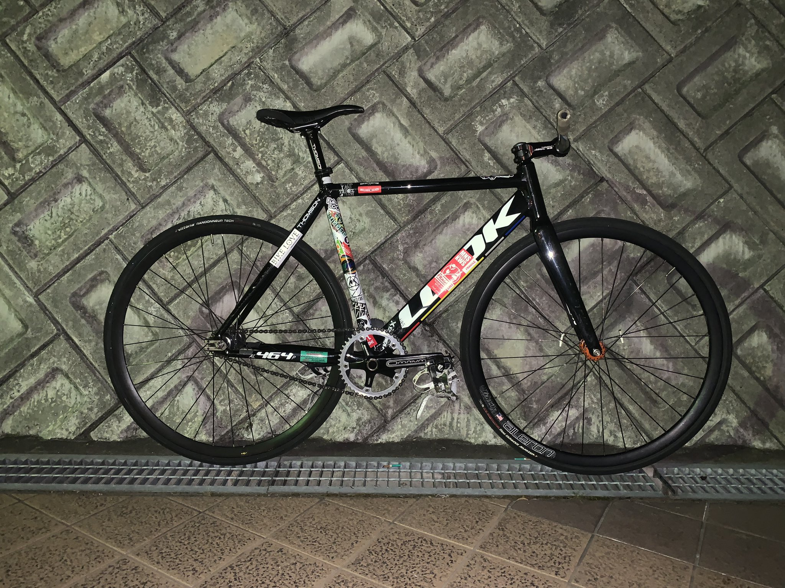

VittKills
FIXIE
MTB
BMX
Liku's LOOK AL464P
今回紹介するのは･･･

このサイト運営者であるLikuのLOOK AL464Pです。
このFixedGearBikeは2022年4月に納車し、街乗りやトリックに使用しています
パーツ構成
・Frame : Look AL464P 2021
・Stem : Thomson X4 100mm
・Bar : Nitto ForShredBar750mm
・Seat : WTB
・SeatPost : Thomson elite 31.8mm
・Crank : SRAM Omunium 165mm
・ChainRing : Sugino 75 45t
・Pedal : MKS MASH WIDE & SOMA & MKS Strap
・FrontWheel : Raketa × Velocity Aileron
・FrontTire : Vittoria Rubino 28c
・RearWheel & Cog : Miche Pistard & EuroAsia 17t
・ReatTire : Vittoria Randonneur Teck2.0